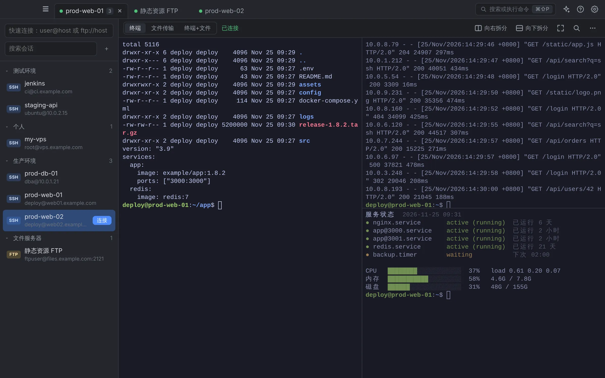
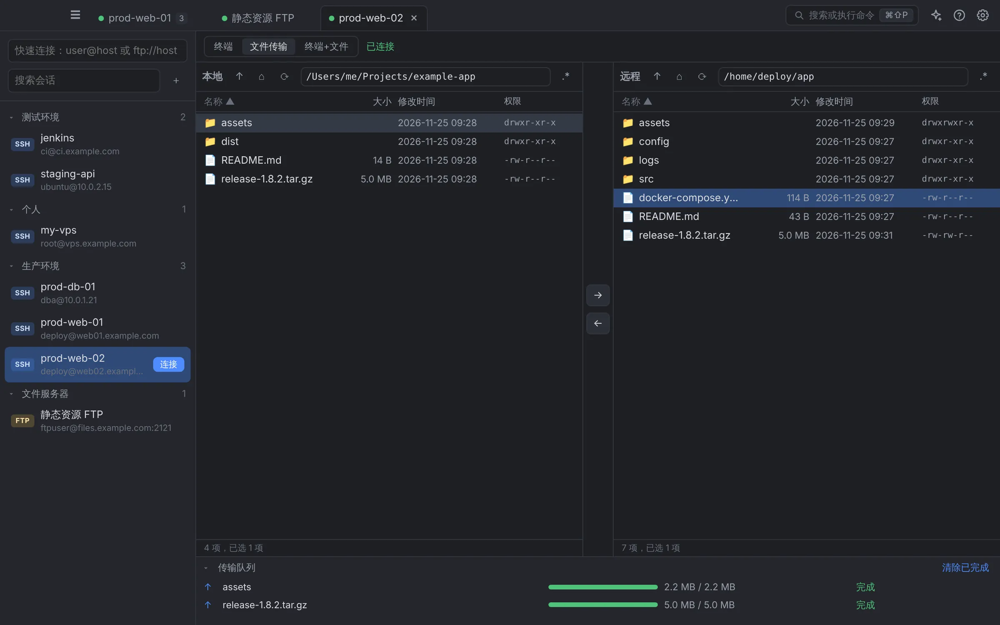
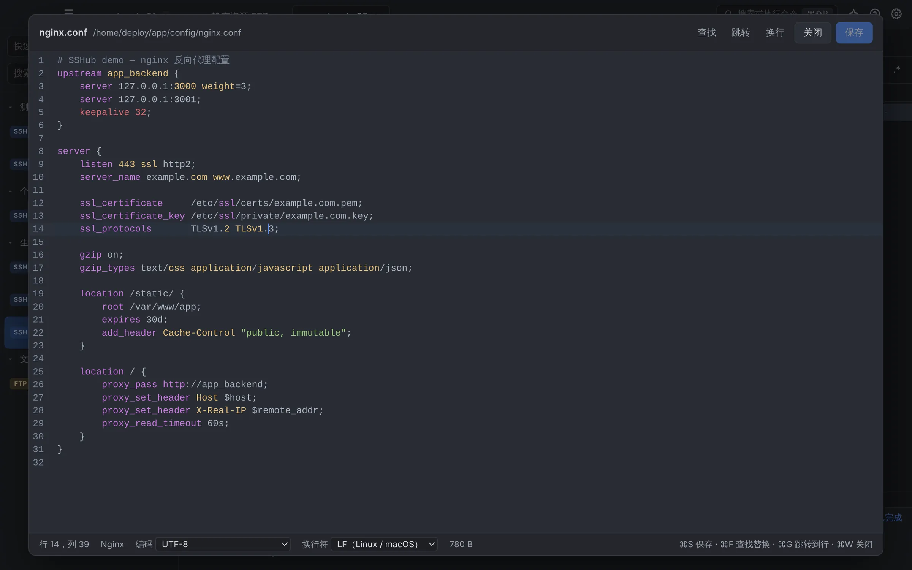
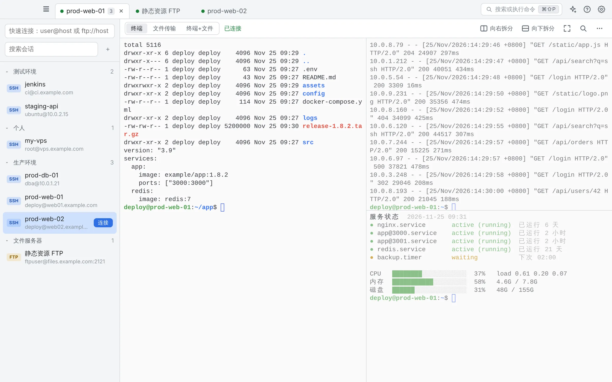

Free · Open source · macOS & Windows
Every server you manage,
right on your desktop
An SSH terminal and SFTP / FTP file transfer in one app. Save your servers, connect with a double-click, work in split panes, drag files across and edit configs in place — everything day-to-day ops needs.
Also available for Windows →Also available for macOS → · Portable zip (no install)

The app's interface is currently in Simplified Chinese.
Everything you do every day, made smoother
No more juggling separate tools or memorizing commands.
Tabs + split terminals
Open many servers in one window, then split any tab left/right or top/bottom — watch logs in one pane while you work in another.
Dual-pane file transfer
Local on the left, server on the right. Drag to upload or download — whole folders too — with clear progress.
Edit server files in place
Double-click a config to edit it and press ⌘S to save it back. Syntax highlighting, find & replace, and GBK files that don't turn into gibberish.
Command palette
⌘P and a few letters connect you to a server; ⌘⇧P finds and runs any action. No menu digging.
Quick Terminal
Press a hotkey in any app and a terminal slides down from the top of the screen. Press again to hide it — the connection stays open.
Made for production
Multi-line paste confirmation, host key verification on first connect, and passwords kept in the macOS Keychain / Windows DPAPI.
One window to keep an eye on every server
- Servers are saved in groups in the sidebar — double-click, click "Connect" or press Enter to connect
- ⌘D splits right, ⌘⇧D splits down; every pane is its own connection
- Unfocused panes are dimmed; ⌘⇧↩ zooms the current pane and restores it again
- Closed a tab by mistake? Press ⌘Z within 10 seconds — the connection never dropped
- Get a macOS notification when a long-running command finishes in the background

Moving files feels as easy as Finder
- Local and remote side by side — drag, double-click or use the arrows, or drop files straight from Finder
- Upload and download whole folders with progress and speed; cancel any time
- Create, rename, duplicate, move, delete and chmod on the server from the context menu
- SFTP, FTP, explicit / implicit FTPS and anonymous login are all supported
- Legacy servers with GBK (Chinese) file names? Pick the encoding and they display correctly

Change a config without the download–edit–upload dance
- Double-click nginx.conf, .env, scripts or logs to open them in the built-in editor
- Syntax highlighting for 100+ languages and config formats, ⌘F find & replace, ⌘G go to line
- Detects UTF-8 / GBK / Big5 and keeps the original encoding and line endings when saving
- Prefer VS Code? Right-click → "Open with local app" and every save is uploaded automatically

Can't remember a shortcut? Just search
- ⌘P: type a server name or IP and press Enter to connect — open tabs show up too
- ⌘⇧P: find and run any action — split the terminal, switch themes, toggle settings…
- Fuzzy matching:
pdbfindsprod-db

One hotkey, and a terminal drops down
Writing docs or watching a dashboard and need to run a couple of commands on a server? Press the global hotkey (default ⌃`, customizable) and a terminal slides down from the top of the screen, already connected. Press it again when you're done.

Looks great in dark and light
- Follows the system's dark / light mode automatically
- 14 built-in terminal color schemes: One Dark, Dracula, Solarized, Gruvbox, Nord, Tokyo Night, Catppuccin…
- Adjustable background opacity and blur; ligatures for fonts like Fira Code
- Show images right in the terminal (Sixel / iTerm2 image protocol)

A little extra care on production servers
These protections are on by default — nothing to configure.

Paste protection
Preview and confirm multi-line pastes, or paste without the trailing newline, so nothing runs the moment you paste.
Host key verification
Confirm the server's fingerprint on first connect and get a clear warning if it ever changes — no silent man-in-the-middle.
Passwords stay encrypted
Saved passwords and key passphrases are encrypted with the macOS Keychain or Windows DPAPI and never leave your computer.
Clipboard goes one way
Copies from vim / tmux on the server reach your Mac, but the server can never read your clipboard.
And plenty of details
user@host or ftp://host, press Enter, and optionally save ittail -f and top flooding the screenUp and running in three steps
macOS
-
1
Download the installer
Apple silicon (M1 and later): get the arm64 build; Intel: the x64 build. Not sure? Click → About This Mac and check "Chip".
-
2
Drag it to Applications
Open the dmg and drag SSHub into your Applications folder.
-
3
Allow it on first launch
SSHub isn't notarized by Apple yet, so the first launch says it can't be verified. Click "Done", open System Settings → Privacy & Security and click "Open Anyway" near the bottom. You only need to do this once.
If macOS says the app "is damaged", run this in Terminal and open it again:
xattr -cr /Applications/SSHub.app
Windows 10 / 11
-
1
Download the installer
Most PCs: the x64 installer. ARM devices such as Surface Pro X or Copilot+ PCs: the ARM64 installer. Prefer no installation? Use the portable zip.
-
2
Run the installer
Pick an install folder if you like; SSHub adds shortcuts to the desktop and the Start menu.
-
3
If SmartScreen appears
SSHub isn't code-signed yet, so Windows may say "Windows protected your PC". Click More info → Run anyway — only once.
FAQ
Is SSHub free?
Yes, completely. The source code is on GitHub under the Apache-2.0 license.
Is the app available in English?
Not yet — the interface is currently in Simplified Chinese, while this website and the README are available in English. An English interface is on the roadmap; feel free to upvote it in Issues.
Does it run on Windows or Linux?
Yes for Windows: Windows 10 and 11 on x64 and ARM64 (installer or portable zip). On Windows the app's shortcuts use Ctrl+Shift — like Windows Terminal — so Ctrl+C, Ctrl+D or Ctrl+W keep working in the terminal. Linux isn't packaged yet.
Where are my server passwords stored? Is that safe?
Sessions live in ~/Library/Application Support/SSHub/. Passwords and key passphrases are encrypted with a key derived from the macOS
Keychain (macOS) or DPAPI (Windows), stay on your own computer, and are never uploaded anywhere. On Windows the folder is %APPDATA%\SSHub\.
Why does macOS say the developer can't be verified?
The app isn't notarized by Apple yet (that needs a paid developer account). Follow "Allow it on first launch" above once and it opens normally from then on.
Chinese file names or terminal output look garbled — what now?
Set the session's encoding to the one the server uses (older servers often use GBK); terminal output and FTP file names will then display correctly.
How do I discover all the features?
Click the ✦ button in the app's top-right corner for the What's New tour, press ⌘/ for every keyboard shortcut, or press ⌘⇧P and search for what you want to do.
Found a bug or have a feature request?
Please open an issue on GitHub Issues.
Give SSHub a try
Free to download — you'll be connected to your first server in minutes.